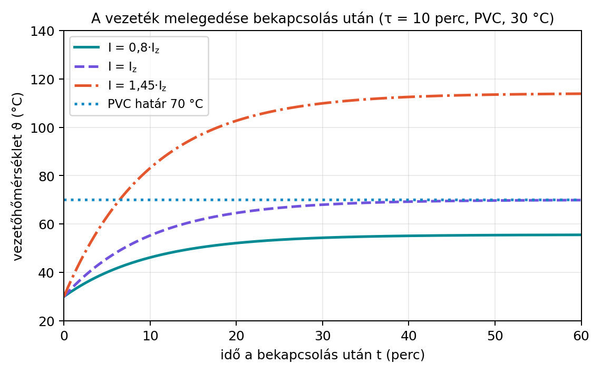

A családi ház vagy lakásfelújítás során az egyik leggyakoribb szerelői hiba, hogy a vezetőt „szemre” választják: „egy 1,5 mm²-es vezeték elbírja a 16 ampert”. Ez a gyakorlat azonban figyelmen kívül hagyja a szerelési módot, a környezet hőmérsékletét és a közös védőcsőben futó többi áramkör hatását. A vezető és a szigetelés melegedése határozza meg, hogy az adott áramkör tartósan, károsodás nélkül üzemeltethető-e. Ebben az alfejezetben az úgynevezett tartós terhelhetőség fogalmát és a javítótényezők alkalmazását tanuljuk meg, mert e nélkül sem a Feszültségesés és a vezeték méretezése, sem az Anyag- és eszközkiválasztás, árajánlat vagy az Aljzatkörök és fogyasztói csatlakozások, nedves helyiségek feladatait nem lehet biztonságosan megoldani.
Amikor a vezetőn áram folyik, a vezető ohmos ellenállásán teljesítmény hővé alakul. Ez a hő egy része a vezető anyagát melegíti, másik része a szigetelésen, a környező levegőn vagy a szerelőcső anyagán keresztül távozik. A hőmérséklet akkor állandósul, amikor a veszteségi hőteljesítmény megegyezik a környezetbe leadott hőteljesítménnyel.
Definíció. A vezeték megengedett üzemi hőmérséklete az a legnagyobb hőmérséklet, amelyen a szigetelőanyag a várható élettartama alatt – jellemzően több évtized – nem károsodik káros mértékben. A legelterjedtebb PVC-alapú szigetelésnél ez a határ °C, a térhálósított polietilén (XLPE) alapú szigetelésnél pedig °C (ellenőrizendő: az adott gyártói adatlap és a hatályos szabvány pontos értékei).
A hőmérséklet-emelkedés körülbelül az áram négyzetével arányos, ezért a túlterhelés gyorsan túlmelegedést okoz. A túl magas hőmérséklet először a szigetelőanyag öregedését gyorsítja fel: a PVC elveszti rugalmasságát, megkeményedik, megreped; ezáltal csökken a dielektromos szilárdsága, és kialakulhat a zárlat. A melegedés a vezetőt körülvevő szerelvényeket, kapcsolókat, csatlakozó kapcsokat is igénybe veszi, és tűzveszélyes helyzetet teremt.
Összefüggés. A vezető ellenállása a hőmérséklettel is nő, tehát a melegedés visszahat az áramfelvételre: nagyobb hőmérséklet nagyobb ellenállást, nagyobb ellenállás további melegedést okoz. A gyakorlati méretezésnél azonban a megengedett hőmérséklethez tartozó táblázatos, úgynevezett tartós terhelhetőségi értéket használjuk, amely már ezt a visszacsatolást figyelembe veszi.
A vezetékek tartós terhelhetősége () függ a vezető anyagától (réz vagy alumínium), a szigetelés típusától, a keresztmetszettől, a szerelési módtól és a környezet hőmérsékletétől. Az MSZ HD 60364-5-52 szabvány rendszere szerint a gyártók és a tervezők a referencia-körülményekre (levegőben, csőben, szabadon szerelve, adott környezeti hőmérséklet, egyetlen áramkör) adják meg a vezetők névleges terhelhetőségét. A táblázatból kiolvasható alapértéket azután javítótényezőkkel igazítjuk a valóságos szerelési viszonyokhoz.
Szabvány. A kisfeszültségű villamos berendezések létesítését a magyarországi gyakorlatban az MSZ HD 60364 sorozat szabályozza; a vezetők terhelhetőségének és a szerelési módoknak a részleteit az MSZ HD 60364-5-52 tartalmazza. A terhelhetőségi táblázatok, a javítótényezők és a hőmérsékleti alapértékek a szabvány mellékleteiben találhatók; az aktuális kiadást és a táblázatszámokat mindig ellenőrizni kell (ellenőrizendő: a hatályos szabványkiadás, a használt táblázat pontos száma és a referencia-hőmérsékletek).
Definíció. A terhelt erek száma azoknak az ereknek a száma, amelyekben üzem közben tartósan olyan áram folyik, amely melegíti a kábelt. Egyfázisú körben 2 (L és N). Háromfázisú, szimmetrikus körben 3: a nullavezető árama közel nulla, a védővezető pedig üzemben nem terhelt. Ha a 3. felharmonikus a fázisáram kb. 15 %-ánál nagyobb, a nullavezető is terhelt (negyedik terhelt ér, további csökkentő tényezővel; ellenőrizendő: MSZ HD 60364-5-52 E melléklet).
Az alábbi két táblázat a könyv közös tanulási táblázata a Tanulási adattáblák függelékből: tájékoztató, az IEC 60364-5-52 B mellékletének kerekített értékei (ellenőrizendő: MSZ HD 60364-5-52 aktuális kiadása). Réz vezető, PVC-szigetelés, 30 °C környezet; az értékek amperben. A szerelési módok betűjeleit a Színjelölés, keresztmetszet és szerelési módok alfejezet magyarázza.
| mm² (2 terhelt ér) | A1 | A2 | B1 | B2 | C | E |
|---|---|---|---|---|---|---|
| 1,5 | 14,5 | 14 | 17,5 | 16,5 | 19,5 | 22 |
| 2,5 | 19,5 | 18,5 | 24 | 23 | 27 | 30 |
| 4 | 26 | 25 | 32 | 30 | 36 | 40 |
| 6 | 34 | 32 | 41 | 38 | 46 | 51 |
| 10 | 46 | 43 | 57 | 52 | 63 | 70 |
| 16 | 61 | 57 | 76 | 69 | 85 | 94 |
| 25 | 80 | 75 | 101 | 90 | 112 | 119 |
| mm² (3 terhelt ér) | A1 | B1 | C | E |
|---|---|---|---|---|
| 1,5 | 13,5 | 15,5 | 17,5 | 18,5 |
| 2,5 | 18 | 21 | 24 | 25 |
| 4 | 24 | 28 | 32 | 34 |
| 6 | 31 | 36 | 41 | 43 |
| 10 | 42 | 50 | 57 | 60 |
| 16 | 56 | 68 | 76 | 80 |
| 25 | 73 | 89 | 96 | 101 |
– környezeti hőmérséklet (levegőben, referencia 30 °C; ellenőrizendő: MSZ HD 60364-5-52):
| Környezet (°C) | PVC | XLPE |
|---|---|---|
| 10 | 1,22 | 1,15 |
| 20 | 1,12 | 1,08 |
| 25 | 1,06 | 1,04 |
| 35 | 0,94 | 0,96 |
| 40 | 0,87 | 0,91 |
| 45 | 0,79 | 0,87 |
| 50 | 0,71 | 0,82 |
| 55 | 0,61 | 0,76 |
| 60 | 0,50 | 0,71 |
– csoportosítás (kötegben, falon, közös csőben; ellenőrizendő: MSZ HD 60364-5-52):
| Áramkörök száma | 1 | 2 | 3 | 4 | 5 | 6 | 7 | 8 | 9 | 12 |
|---|---|---|---|---|---|---|---|---|---|---|
| 1,00 | 0,80 | 0,70 | 0,65 | 0,60 | 0,57 | 0,54 | 0,52 | 0,50 | 0,45 |
A diagram világosan mutatja, hogy a terhelhetőség már néhány fokos környezeti hőmérséklet-emelkedésre is érzékenyen csökken, ezért a javítótényező alkalmazása nem elhanyagolható formalitás.
A tényleges megengedett terhelés kiszámításához az alap-táblázatból kiolvasott értéket meg kell szorozni a vonatkozó tényezőkkel. Az általános képlet:
ahol: - a környezeti hőmérséklet javítótényezője (a referencia-hőmérséklettől való eltérés miatt), - a csoportosítási tényező (több áramkör vagy vezeték közös csőben, tálcán vagy kötegben fut), - a hőszigetelés tényezője (pl. hőszigetelésben vagy szigetelt falüregben fektetett vezeték esetén), - további tényezők is lehetnek, például talajban fektetésre vagy alumíniumvezetőre, de a gyakorlati szerelői feladatokban a fenti három a leggyakoribb.
Szabály (hőszigetelés). Ha a kábelt teljesen hőszigetelő anyag veszi körül, a terhelhetőség erősen csökken. Tanulási tényezők egy kábelre, C szerelési módra (ellenőrizendő: MSZ HD 60364-5-52, a hőszigetelésben vezetett kábelek táblázata):
| Hőszigetelésben vezetett hossz (mm) | 50 | 100 | 200 | 400 vagy több |
|---|---|---|---|---|
| 0,88 | 0,78 | 0,63 | 0,51 |
Már egy rövid, szigetelésen áthaladó szakasz is számít, mert a meleg a vezető mentén csak kis távolságra tud elvezetődni.
Gyakorlat. A födémen való átvezetést védőcsőben, a hőszigetelés fölött vezetett nyomvonallal tervezd; felméréskor keresd a kábelt az utólag felhordott szigetelés alatt is.
A tényezők értéke általában 1,0 alatt van, tehát csökkentik a terhelhetőséget. Előfordulhat 1,0 feletti is, például a 30 °C-nál alacsonyabb környezeti hőmérsékletnél (lásd a 2. példát), de a tervezők ezt a tartalékot a gyakorlatban gyakran nem használják ki, hanem biztonsági okból -gyel számolnak.
A tényezők a helyszínen jól felismerhető helyzetekhez tartoznak. Az alábbi ábra egy családi ház metszetén mutatja őket: az 1 elosztó, mérőhely környezete tartósan melegebb (a feladatgyűjteménybeli (10.3) példában 35 °C, ); a 2 kazánházban a fűtési csövek mellett vezetett kábel környezete még melegebb ( erősen csökkent); a 3 padlásfödém hőszigetelésében futó kábel a hőt alig tudja leadni (); a 4 falhoronyban több áramkör fut egy közös csőben ().
Felméréskor ezért nem elég a tervrajzot nézni: a kábel tényleges nyomvonalán kell végigmenni, és minden olyan szakaszt, ahol meleg környezet, hőszigetelés vagy csoportosítás van, külön tényezővel kell figyelembe venni; a legkedvezőtlenebb szakasz dönt. Gyakran olcsóbb a nyomvonalat módosítani (például a kábelt a fűtési csövektől távolabb vezetni), mint nagyobb keresztmetszetet választani. A HTML-kiadásban a számokra mutatva kiemelődnek a helyek.
Szabály. A javítótényezőket nem tetszőlegesen kerekítjük, hanem a szabvány táblázataiból választjuk. A végeredményt a szabványos terhelhetőségi értékre, a biztonság irányába kerekítve adjuk meg.

A kötegben a középső kábel melegszik a legjobban, mert minden oldalról meleg szomszéd veszi körül; ezért a csoportosítási tényezőt a valós darabszám és elrendezés alapján kell kiválasztani, és nem a „csak néhány kábel” benyomás alapján. A távköz nagyságát és a hozzá tartozó tényezőt a szabvány táblázata adja. A HTML-kiadásban az egyes elrendezésekre mutatva elolvasható a magyarázat.
A biztonságos méretezés alapfeltétele az
egyenlőtlenséglánc, ahol: - az áramkör tartós üzemi árama (a legnagyobb tartósan folyó áram), - a védőkészülék (kismegszakító vagy olvadóbiztosító) névleges árama, - a vezeték korrigált tartós terhelhetősége.
Törvény. Az MSZ HD 60364-4-43 szerint a vezetők túlterhelés elleni védelmét úgy kell kialakítani, hogy a vezető a várható túlterhelések és zárlatok során ne károsodjon. Ennek alapja az feltétel, valamint az, hogy a vezető terhelhetősége a védőkészülék kioldási karakterisztikájával összhangban legyen. (Ellenőrizendő: a hatályos szabvány követelménye és a védőkészülék kioldási karakterisztikája.)
Az egyenlőtlenség értelmezése: - : a védőkészüléket legalább akkorára kell választani, mint a várható legnagyobb üzemi áram, különben a normál üzemben is leold. - : a védőkészülék névleges árama nem haladhatja meg a vezető korrigált terhelhetőségét, különben a vezető túlmelegedhet anélkül, hogy a védelem lekapcsolna.
Szabály. A túlterhelés elleni védelemnek egy második feltételt is teljesítenie kell: , ahol a védőkészülék megállapodás szerinti, egy órán belül biztosan működő árama. Kismegszakítónál , ezért ott az teljesülése elég; olvadóbiztosítónál (a megállapodás szerinti áram nagyobb, kb. ) külön ellenőrizni kell (ellenőrizendő: MSZ HD 60364-4-43, MSZ EN 60898-1, MSZ EN 60269).
A feltételek teljesülése esetén a vezeték hőmérséklete tartósan a megengedett határ alatt marad; a – tartományban azonban a védőkészülék csak késleltetve old le, a vezeték átmenetileg a határ fölé melegedhet.
Megjegyzés. A gyakorlatban a feltételt a Kismegszakítók és kioldási jelleggörbék alfejezet is használja; ott a B, C, D karakterisztikájú kismegszakítók kioldási viselkedését is figyelembe vesszük.
A vezető hőmérséklet-emelkedését a veszteségi teljesítmény és a hőellenállás határozza meg. Egyszerű stacionárius modellben a vezető hőmérséklete:
ahol a vezető hőmérséklete, a környezet hőmérséklete, a vezető ellenállása a meleg állapotban, pedig a termikus ellenállás a vezető és a környezet között. Ezt a képletet a gyakorlati méretezésben ritkán használjuk, mert a szabványos táblázatok már a megengedett hőmérsékletre vonatkoznak, de segít megérteni, miért nő a hőmérséklet az áram négyzetével, és miért fontos a jó hőelvezetés.
A képlet csak a végállapotot adja meg. A vezeték azonban nem melegszik fel egy pillanat alatt: a rezet és a szigetelést fel kell fűteni, ezért a hőmérséklet fokozatosan, egyre lassulva közelít a végértékhez. Ez magyarázza, miért nem árt a vezetéknek a motor rövid indítási árama, és miért árt egy tartós, „csak” 30–45 %-os túlterhelés.
Összefüggés. Egyszerű (egytárolós) melegedési modellben a bekapcsolás után a vezető hőmérséklete
ahol a végállapotbeli melegedés, a szigetelés megengedett hőmérséklete (PVC: 70 °C), a táblázat referencia-hőmérséklete (30 °C), pedig a termikus időállandó: ennyi idő alatt éri el a melegedés a végérték kb. 63 %-át, alatt kb. 95 %-át. Kis keresztmetszetű, csőben vagy falban fektetett vezetékre néhány perctől negyedóráig terjed; a példákban tanulási értékként percet használunk (tájékoztató érték, a valódi időállandó a keresztmetszettől és a szerelési módtól függ).
Az alábbi grafikon a modellt 30 °C-os környezetben, PVC-szigetelésű vezetékre, három terhelőáramra mutatja; a vízszintes vonal a 70 °C-os határ.

Olvasd le a görbéket! -nél a vezető 55,6 °C-on állandósul, -nél pontosan a 70 °C-os határon. -nél a végérték °C lenne; a 70 °C-os határt a vezeték
alatt éri el. A kismegszakító próbája ugyanakkor csak annyit követel, hogy ennél az áramnál egy órán belül kioldjon. A vezeték tehát ilyenkor percekig a határ fölött üzemelhet: ezt a szigetelés ritkán és rövid ideig elviseli, tartósan nem. Ezért korlátozza a szabály a megállapodás szerinti kioldóáramot -re, és ezért nem szabad a túlterhelést „úgyis leold” alapon tűrni. A rövid áramlökés viszont ártalmatlan: ha , a vezeték alig melegszik. Ugyanez az időfüggés magyarázza a kismegszakító hőkioldójának fordított (inverz) időfüggését a Kismegszakítók és kioldási jelleggörbék (B, C, D) alfejezetben és a motorok hőkioldójának működését a Motorvédő kapcsoló, hőkioldó, megszakító és szakaszoló alfejezetben: a bimetall is egy kis „termikus tároló”, amely a vezetékhez hasonlóan melegszik.
A könyv HTML-kiadásában ehhez az alfejezethez egy interaktív terhelhetőség-kalkulátort csatolunk. A kalkulátorban a felhasználó megadja a táblázatból kiolvasott referencia-terhelhetőséget (ez a vezető anyagától, keresztmetszetétől és a szerelési módtól függ), kiválasztja a szigetelés típusát (PVC vagy XLPE), beállítja a környezeti hőmérsékletet, a csoportosítási és a hőszigetelési tényezőt, valamint az üzemi áramot és a védőkészülék névleges áramát. A program kiszámolja a tényezőt és a korrigált értéket, majd ellenőrzi az feltételt, szövegesen is kiírva, hogy teljesül-e. A statikus ábra az 1. példa három áramát mutatja egymás mellett: A, A, A – az reláció nem teljesül.

A kalkulátorban a referencia-terhelhetőséget () és a , tényezőt a hatályos táblázatból kell beírni (a gombok a fejezet két kidolgozott példáját töltik be); a tényezőt a program a fenti képletből számolja PVC (70 °C) vagy XLPE (90 °C) szigetelésre, és az feltételt is kiírja.
A javítótényezők elhagyása. A leggyakoribb hiba, hogy a szerelő csak a referencia-táblázatból olvas, és nem szoroz a csoportosítási vagy hőmérsékleti tényezővel. Ez túlmelegedéshez, idő előtti szigetelésöregedéshez vezet. Helyes: mindig alkalmazd a tényezőket, és a végeredményt ellenőrizd az feltétellel.
Hibás szerelési mód. A szerelési módot gyakran nem azonosítják pontosan (pl. falon kívüli csőben szerelt vezetőt levegőben szereltnek tekintik, ami nagyobb terhelhetőséget ad). A rossz osztályozás miatt a vezető valóságban kevesebb áramot bír el. Helyes: a szerelés tényleges kialakítását azonosítsd a szabványos jelölésekkel, és a megfelelő táblázatot használd.
A csoportosítás figyelmen kívül hagyása. Több áramkör közös védőcsőben vagy kábeltálcán való elhelyezése esetén a szomszédos vezetők melegítik egymást. Ha ezt nem vesszük figyelembe, a belső vezetők hőmérséklete a megengedett érték fölé emelkedik. Helyes: a csoportosítási tényezőt mindig a valós darabszám és elrendezés alapján válaszd ki.
A védőkészülék névleges áramának túlzott megválasztása. Ha túl nagy, a feltétel nem teljesül: a kismegszakító nem védi meg a vezetőt a tartós túlterhelés ellen. Helyes: a védőkészüléket az üzemi áramhoz és a vezető terhelhetőségéhez igazítsd, ne a csúcsáramokhoz.
A túlterhelés és a zárlat összemosása. A túlterhelés elleni feltétel ( és ) a tartós, kis túláramra vonatkozik; a kismegszakító hőkioldója késleltetett, ezért rövid idejű túláramnál a vezető átmenetileg megmelegszik. A zárlati áramra külön feltétel van (, azaz a vezető termikus határa és a kioldási idő), amelyet a Vezetékvédelem, koordináció és zárlati áram alfejezet tárgyal. Ha a méretezés csak az egyik feltételt vizsgálja, a vezető károsodhat. (Ellenőrizendő: a gyártói kioldási görbe és a vezető termikus terhelhetőségének összevetése.)
Gyakorlás: ennek az alfejezetnek a kidolgozott példái, gyakorlatai és megoldással ellátott feladatai az Összefoglaló feladatgyűjtemény villanyszerelő tanulóknak című kötet 10.3 szakaszában találhatók.
A vezetékek tartós terhelhetőségét a vezető melegedése, a szigetelés megengedett üzemi hőmérséklete (PVC: 70 °C, XLPE: 90 °C) és a szerelési körülmények együttesen határozzák meg. A referencia-terhelhetőségi táblázatból kiolvasott értéket a környezeti hőmérséklet (), a csoportosítás () és a hőszigetelés () javítótényezőivel korrigáljuk: . A túlterhelés elleni védelem alapfeltétele az összefüggés, ahol az üzemi áram, a védőkészülék névleges árama, a vezető korrigált terhelhetősége. Ez a feltétel biztosítja, hogy a vezető hőmérséklete a megengedett érték alatt maradjon, és a védelem időben lekapcsoljon. Továbbvitt eredmény. Az feltételt és a korrigált meghatározását használjuk a Feszültségesés és a vezeték méretezése, az Anyag- és eszközkiválasztás, árajánlat és a nedves helyiségek aljzatköreinek kialakítása során (Aljzatkörök és fogyasztói csatlakozások, nedves helyiségek).
A fejezetben hivatkozott szabványok az MSZ HD 60364 sorozat, elsősorban az MSZ HD 60364-5-52. A konkrét táblázatszámok, a referencia-terhelhetőségi értékek, a javítótényezők és a hőmérsékleti határértékek a szabvány aktuális kiadásától függnek; az itt szereplő értékek tanulási példák, és nem feltétlenül azonosak a hatályos táblázat értékeivel. A felhasználás előtt mindig ellenőrizni kell a gyártói adatlapokat és a hatályos szabványt (ellenőrizendő: az MSZ HD 60364-5-52 aktuális kiadásának terhelhetőségi táblázatai, javítótényezői és a referencia-hőmérsékletek).